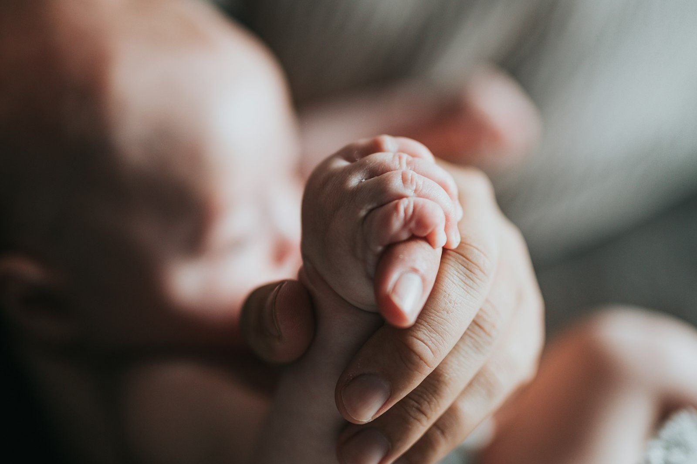
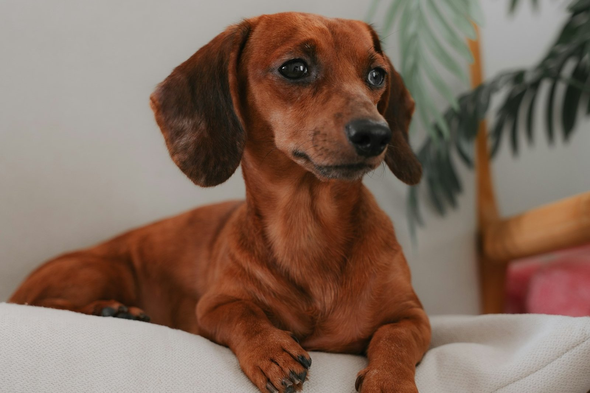
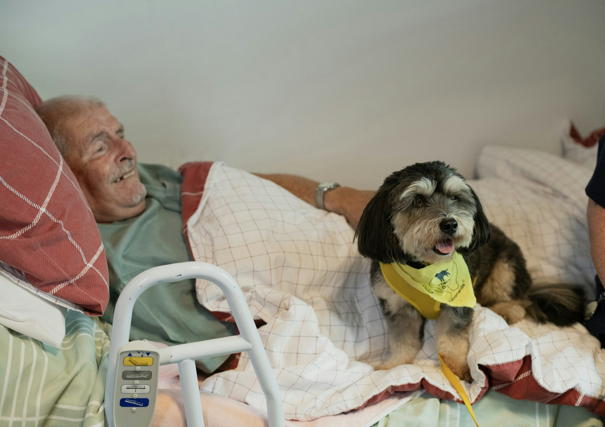
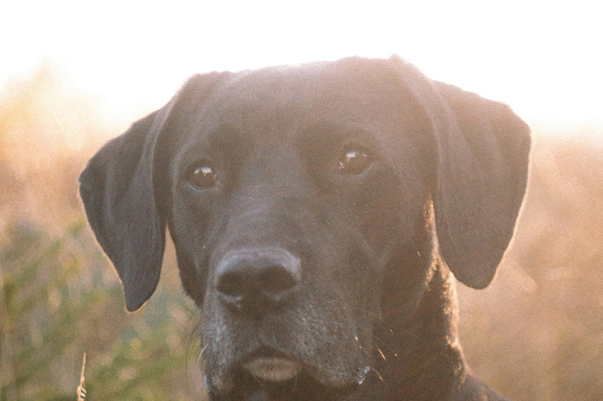

Numero 4 · 16 novembre 2026
Cinque minuti alla volta
Il numero così come è arrivato agli iscritti.
Buongiorno
Una mamma che per cento giorni ha potuto vedere i suoi gemelli cinque minuti alla volta. Una bassotta sparita sotto un campo inglese. Un cane che non si è staccato dal suo padrone nemmeno in ospedale. E una labrador nera che con uno sguardo avvisa prima che arrivi il peggio.
Questa settimana sono storie di chi resta accanto. Tutte finiscono bene.
Cinque minuti di storie vere. Buon lunedì.
La storia della settimana
Cinque minuti alla volta

Foto di repertorio · Nathan Dumlao / Unsplash
Sette anni fa, all'ospedale universitario di Cluj, in Romania, Loredana ha dato alla luce due gemelli, Miriam e Albert, a meno di 26 settimane di gravidanza. Pesavano intorno ai settecento grammi. Sono rimasti in incubatrice per cento giorni.
In reparto le visite duravano cinque minuti. «Avevo cinque minuti per vedere i miei figli», ha raccontato. «Contavo i minuti fino alla visita successiva. Quei cinque minuti erano diventati la mia unità di misura.» Non poteva tenerli in braccio, né allattarli. «L'incubatrice ci separava.»
Mercoledì 11 novembre Loredana è tornata in quell'ospedale. Questa volta per ringraziare. L'occasione era la presentazione del primo anno di un programma di Salvați Copiii România, Mastercard e Banca Transilvania, che ha rinnovato le attrezzature di sette reparti e cinque centri che seguono i bambini nati prematuri anche dopo le dimissioni. In Romania nasce prematuro un bambino su dieci.
I gemelli non c'erano, ma hanno mandato un video. «Quando sono nata pesavo solo 730 grammi», dice Miriam. «Oggi sto bene, cresco, gioco. Voglio fare la paramedica, voglio salvare vite anch'io.» Albert, invece, da grande vuole fare il pompiere.
«Vogliono essere anche loro dei salvatori», ha detto la mamma.
Fonti: Ioana Ion, Libertatea, 12 novembre 2026 — link · comunicato di Salvați Copiii, 11 novembre 2026 — link
Le buone nuove
Minnie sotto il campo

Foto di repertorio · Max Bvp / Unsplash
Una mattina di fine ottobre, a Kirmington, nel nord dell'Inghilterra, Mallerie Maddison porta a passeggio in un campo Minnie, la sua bassotta di sette anni. A un certo punto Minnie non c'è più. Poi Mallerie la sente abbaiare: la voce arriva da sotto terra, da una condotta di drenaggio lunga un centinaio di metri.
Chiama due agricoltori della zona, poi i vigili del fuoco. Si scava per più di quattro ore, con le pale e con i mezzi agricoli, finché qualcuno riesce ad aprire un varco nel tubo. Minnie esce illesa, tranquilla, e accetta volentieri carezze e premietti.
Tre anni fa Mallerie l'aveva trovata abbandonata e magrissima. Per i vigili del fuoco è stato «un perfetto esempio di lavoro di squadra, perseveranza e un pizzico di fortuna».
Fonti: BBC News, 27 ottobre 2026, ripreso da AOL — link · Gi Grimsby, 28 ottobre 2026 — link
Il cane che seguiva la barella

Foto di repertorio · Age Cymru / Unsplash
Un uomo e il suo cane viaggiano da un paese all’altro, zaino in spalla. A metà ottobre, in Paraguay, l'uomo ha un incidente e viene ricoverato all'ospedale traumatologico di Asunción.
Il cane non lo lascia. Segue la barella lungo i corridoi e, nei video girati in reparto, dorme accanto al suo letto. Sono le dottoresse che lo curano a porsi il problema: chi si occupa del cane mentre lui è ricoverato? Chiedono aiuto all'associazione Olfateando Huellas, che trova una persona disposta a ospitarlo per qualche tempo.
Qualche giorno dopo, riporta la radio paraguaiana RDN citando chi ha seguito la vicenda, l'uomo è stato dimesso e il cane gli è stato riportato. Dove siano adesso nessuno lo sa: sono ripartiti.
Fonti: RDN, 19 ottobre 2026 — link · La Nación (Paraguay), 22 ottobre 2026 — link
Lo sguardo di Mae

Foto di repertorio · T. Hoffmann / Unsplash
Laura Chegwidden vive nel Regno Unito con la sclerosi multipla e altre due malattie che possono farle accelerare il cuore all'improvviso, fino a farla svenire. «Prima di lei cadevo, mi facevo male e mi risvegliavo da sola.»
Nel 2023 ha conosciuto Mae, una labrador nera di undici settimane. La lista d'attesa per un cane d'allerta medica era lunga, così ha deciso di addestrarla lei, con l'aiuto dell'associazione Medical Detection Dogs. Oggi Mae sente dall'odore che una crisi sta arrivando e la avvisa fissandola intensamente. Se Laura è girata, le fa un piccolo salto addosso. Se il guinzaglio ce l'ha qualcun altro, fissa lui.
Con Mae accanto, Laura è tornata a guidare e ad andare a cavallo. Quest'anno ha finito il dottorato in ricerca sul cancro, dopo otto anni. L'ha dedicato a lei. «È la mia salvezza.»
Fonte: Laura Chegwidden, raccolto da Deborah Solomon, The Guardian, 9 novembre 2026 — link
Il numero della settimana
5 — i minuti che Loredana aveva a ogni visita per vedere i suoi gemelli in incubatrice. Per cento giorni.
La micro-azione
Questa settimana: un grazie in ritardo. Pensa a un medico, un'infermiera, un insegnante che ti ha aiutato in un momento difficile, anche anni fa. Scrivigli due righe, o passa a salutarlo. Loredana ci ha messo sette anni, e quel grazie ha commosso un'intera sala.
E se conosci una storia vera che merita di essere raccontata, rispondi a questa email: la verifichiamo e, se regge, entra in uno dei prossimi numeri.
Tutte le fonti di questo numero
Abbiamo letto ogni articolo e controllato nomi, date e numeri. Se troviamo un errore, lo correggiamo nel numero successivo.
Cinque minuti alla volta
Libertatea, Ioana Ion, 12 novembre 2026 — articolo
Salvați Copiii România, comunicato dell'11 novembre 2026 — Agerpres
Minnie sotto il campo
Il cane che seguiva la barella
Lo sguardo di Mae
The Guardian, 9 novembre 2026 — articolo
Le foto sono di repertorio, da Unsplash: Nathan Dumlao, Max Bvp, Age Cymru, T. Hoffmann.
Buonaluce — Buone notizie. Buona luce. Newsletter indipendente, non registrata come testata giornalistica. Ti è arrivata da un amico? Iscriviti su buonaluce.it